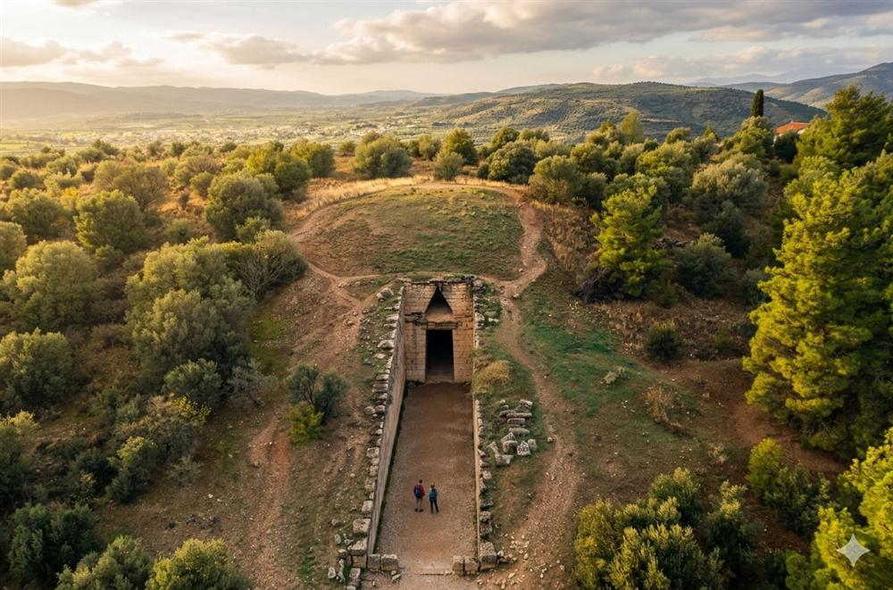
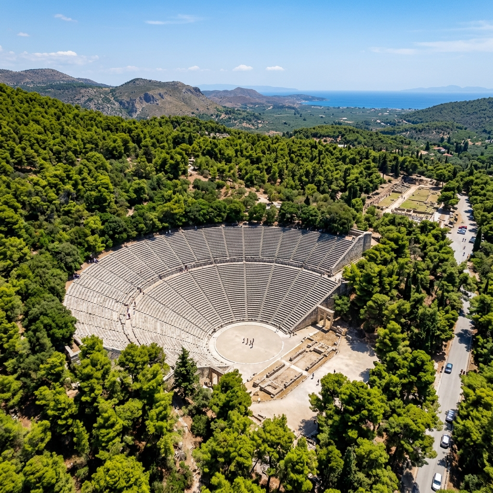

Taxi & Van Transfers
Entre nos épicos homéricos. Visite a cidade dourada de Micenas e a maravilha acústica de Epidauro.
Junte-se a nós numa jornada inesquecível à península de Argólida, onde a mitologia grega ganha vida. Este tour privado de dia inteiro leva-o a alguns dos sítios arqueológicos mais significativos da Grécia antiga, mergulhados nas lendas do Rei Agamémnon e da Guerra de Troia.
Caminhará através da imponente Porta dos Leões de Micenas, explorará túmulos monumentais, passeará pelas ruas românticas de Náuplia (a primeira capital da Grécia moderna) e terminará no deslumbrante Santuário de Asclépio em Epidauro, casa do teatro antigo famoso pela sua acústica perfeita.
Túmulo de Agamémnon
A obra-prima acústica
O seu motorista privado irá recolhê-lo em Atenas. A nossa primeira grande paragem será uma vista deslumbrante do Canal de Corinto, uma maravilha da engenharia que liga os mares Egeo e Jónico.
Entre no antigo reino de Agamémnon pela lendária Porta dos Leões. Explore as muralhas ciclópicas, os Túmulos Reais e o impressionante Tesouro de Atreu (Túmulo de Agamémnon).
Faremos uma paragem na pitoresca cidade costeira de Náuplia. Desfrute de um passeio pelas suas charmosas ruas estreitas, admire a fortaleza de Bourtzi na água e desfrute de um almoço tradicional grego.
O tour termina com uma visita ao antigo Teatro de Epidauro, reconhecido mundialmente pela sua acústica impecável. Até um sussurro no palco pode ser ouvido claramente nas filas de assentos mais altas.
Depois de um dia cheio de maravilhas mitológicas e arquitetura magnífica, relaxe no seu veículo premium enquanto regressamos ao seu alojamento em Atenas.

